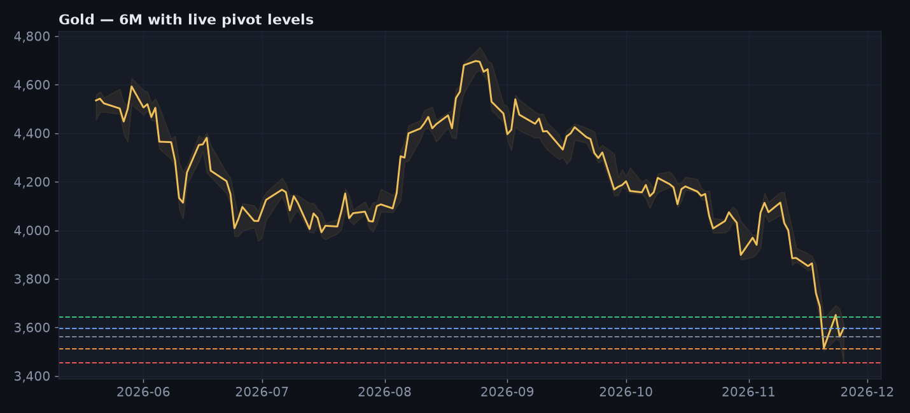

Your four-hour gold outlook
A clearer view of the day, based on the latest available completed 15-minute candle.
Research only · No demonstrated edge. Regular broker hours are assumed, not verified live. Gaps, holidays and delays matter. Scenario levels are not orders or guaranteed fills.
Other forecasts & research
Separate data sources and earlier research are below.
Intraday research · 08:00 and 13:00 Accra forecasts
Two separate forecasts: where gold futures may move from 08:00 to 18:00, and from 13:00 to 18:00. Accra time is UTC.
Experimental research, not a trade signal. The start is an hourly GC=F futures bar-open proxy. Estimated endpoint is a separate regression and can disagree with direction. The historical return range is not a calibrated prediction interval. Data may be delayed or revised; broker XAU/USD prices differ. Experimental high/low estimates are separate from the endpoint forecast and are not guaranteed support, resistance, reversals, entry times, stops or executable prices.
Recorded live forecasts
| Date | Window | Issued UTC | Direction | P(up) | Start | Estimated end | Outcome |
|---|
Research · session and macro comparison
Exploratory, not a trading signal. The windows are compared on their own common gold/macro samples; choosing the best after observing results risks overfitting. Costs are illustrative, and historical fills at the start price are optimistic.
| UTC window | Test days | Gold-only hit | Macro hit | Always-down | Macro net, $3 cost/oz |
|---|
Loading…
Market sessions · Tokyo, London & New York
Exploratory comparison on the same dates. Local-time definitions: Tokyo 09:00–15:00, London 08:00–16:00, New York 08:00–16:00. These are research conventions, not universal session hours. London and New York times shift in UTC with daylight saving.
| Session | UTC window | Test days | Gold-only | Macro | Always-down | Gold net, $3/oz cost |
|---|
Loading…
Gold XAU/USD — Daily Forecast
Loading live snapshot…
01 The Call — next 1–3 sessions
02 Level map — live pivots
| Price | Meaning | Δ from spot |
|---|
03 Charts — regenerated every refresh

?v=generated_at.04 Model — honest validation
Recent out-of-sample predictions (walk-forward log)
| Date | P(up) | Actual | Fwd ret |
|---|
05 Why — auto-generated drivers
desk_note.md)06 Scenario tree — mapped from model conviction
07 Calendar — today's ignition points
| UTC | Event | Impact | Gold read-across |
|---|
08 Sources & methodology
- gold-api.com — spot XAU/XAG/XPT (also streamed live in the top bar, CORS-open)
- Yahoo Finance — GC=F, SI=F, CL=F, DX-Y.NYB, ^TNX, HG=F, ^GSPC, GLD (3y daily, via chart API)
update.py— fetch → walk-forward model → pivots/correlations → charts →data.json.github/workflows/refresh.yml— cron refresh (every 30 min, Mon–Fri) + manual trigger- Repo:
docs/is the GitHub Pages root — zero-build static deploy